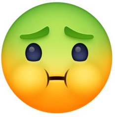
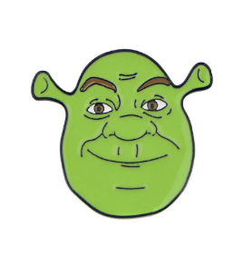

Emojis have become a key part of our everyday conversations. But while most people know what 😊 or 😂 mean, there’s a long list of emojis that leave many scratching their heads. In this article, we explore the hidden meanings behind some of the strangest and most confusing emojis out there — and how you can use them to your advantage.
🤢 Nauseated Face: At first glance, this might seem obvious, but it’s often used in a humorous way to describe something cringey or “too much.” It’s not always about actual sickness — sometimes, it’s just about a bad outfit or a terrible joke.
🧐 Face with Monocle: This emoji might look like it's from the 1800s, but today it's used to express sarcasm, skepticism, or simply “I’m judging you.” It adds a bit of intellectual sass to any message.
There are dozens more emojis that leave users confused. Some are symbols from other cultures, while others just evolved into memes with totally different meanings. Let’s explore a few more...
👹 Ogre: While it’s based on a Japanese folklore creature, it’s often used to represent rage, a bad mood, or even a crazy boss. Context is everything with this one!
👾 Alien Monster: Originally meant to represent old-school arcade games, this emoji now symbolizes anything nerdy, weird, or retro-futuristic. It’s perfect for gamer chats or geeky convos.
Still confused? The truth is, emojis evolve constantly. What means one thing today might become a meme tomorrow. And that’s part of the fun. Emojis are not just symbols — they’re a language, filled with nuance, creativity, and play.
Here are a few tips to use these strange emojis better:
In conclusion, strange emojis are like inside jokes of the digital world. Once you learn what they mean and how to use them, your chats will become more colorful, expressive, and even a bit mysterious.